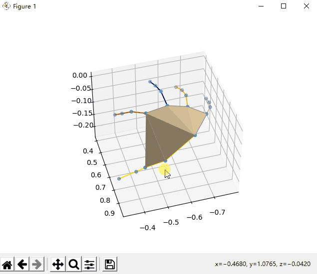

plot dynamic 3D
绘制动态3D图
MediaPipeHands

#!/usr/bin/env python3
import subprocess
import matplotlib.pyplot as plt
import matplotlib.animation as animation
import numpy as np
import PluginsPy
import _thread
import queue
import json
@PluginsPy.addRun
class MediaPipeHands:
"""
利用MediaPipe绘制手掌
@mode(data): 从默认txt文本获取数据显示3D手掌
@data(default/hands.txt): mediapipe hand数据
@output(output/hands.txt): output data
"""
def __init__(self, kwargs):
mode = kwargs["mode"]
self.frames = queue.Queue()
self.inFrame = False
self.x = []
self.y = []
self.z = []
self.exiting = False
self.capturing = False
self.output = kwargs["output"]
self.dataPredict = "0"
self.dataFile = None
self.fig = plt.figure()
self.ax = self.fig.add_subplot(111, projection='3d')
# ax = plt.axes(projection='3d')
self.ax.set_xlabel('x(Camera -x)')
self.ax.set_ylabel('y')
self.ax.set_zlabel('z')
# elev = y, azim = z
self.ax.view_init(elev=45, azim=45)
if mode == "data":
dataPath = kwargs["data"]
x = []
y = []
z = []
with open(dataPath, 'r') as dataFile:
for line in dataFile:
lineDataPart = line.split("MonitorLandMark: ")
if len(lineDataPart) == 2:
lineSplits = lineDataPart[1].strip().split(",")
if len(lineSplits) == 3:
print(lineSplits)
x.append(float(lineSplits[0].split("=")[1]) * -1)
y.append(float(lineSplits[1].split("=")[1]))
z.append(float(lineSplits[2].split("=")[1]))
print(x)
print(y)
print(z)
self.frames.put([x, y, z])
self.change_plot(None)
elif mode == "logcat":
self.logcat(self.capture, "MonitorLandMark", mode)
return
elif mode == "live":
# self.logcat(self.capture, "MonitorLandMark", mode)
_thread.start_new_thread(self.logcat, (self.capture, "MonitorLandMark", mode))
self.fig.canvas.mpl_connect('key_press_event', self.controller)
self.ani = animation.FuncAnimation(self.fig, self.change_plot, interval=1000 / 10)
else:
pass
plt.show()
self.exiting = True
def controller(self, event):
print('press', event.key)
if event.key == "z":
self.dataFile = open(self.output, 'w')
elif event.key == "a":
if self.capturing:
if self.dataFile == None:
return
self.capturing = False
else:
self.capturing = True
elif event.key == "x":
if self.dataFile != None:
self.dataFile.close
self.dataFile = None
elif event.key.isnumeric():
self.dataPredict = event.key
print("dataPredict: " + self.dataPredict)
def change_plot(self, args):
if not self.frames.empty():
print("work for data")
frame = self.frames.get()
print(frame)
x = frame[0]
y = frame[1]
z = frame[2]
self.ax.cla()
self.ax.scatter3D(x, y, z, cmap='Greens')
thumbLine_x = x[0:4 + 1]
thumbLine_y = y[0:4 + 1]
thumbLine_z = z[0:4 + 1]
self.ax.plot3D(thumbLine_x, thumbLine_y, thumbLine_z, 'gold')
index_x = x[5:8 + 1]
index_y = y[5:8 + 1]
index_z = z[5:8 + 1]
self.ax.plot3D(index_x, index_y, index_z, 'red')
middle_x = x[9:12 + 1]
middle_y = y[9:12 + 1]
middle_z = z[9:12 + 1]
self.ax.plot3D(middle_x, middle_y, middle_z, 'blue')
ring_x = x[13:16 + 1]
ring_y = y[13:16 + 1]
ring_z = z[13:16 + 1]
self.ax.plot3D(ring_x, ring_y, ring_z, 'orange')
pinky_x = x[17:]
pinky_y = y[17:]
pinky_z = z[17:]
self.ax.plot3D(pinky_x, pinky_y, pinky_z, 'deeppink')
plam_x = [x[0], x[5], x[9], x[13], x[17], x[0]]
plam_y = [y[0], y[5], y[9], y[13], y[17], y[0]]
plam_z = [z[0], z[5], z[9], z[13], z[17], z[0]]
self.ax.plot3D(plam_x, plam_y, plam_z, 'gray')
plamSurface_x = [x[0], x[5], x[9], x[13], x[17], x[0]]
plamSurface_y = [y[0], y[5], y[9], y[13], y[17], y[0]]
plamSurface_z = [z[0], z[5], z[9], z[13], z[17], z[0]]
self.ax.plot_trisurf(np.array(plamSurface_x), np.array(plamSurface_y), np.array(plamSurface_z), color="moccasin")
plamSurface_x = [x[0], x[1], x[2], x[5], x[0]]
plamSurface_y = [y[0], y[1], y[2], y[5], y[0]]
plamSurface_z = [z[0], z[1], z[2], z[5], z[0]]
self.ax.plot_trisurf(np.array(plamSurface_x), np.array(plamSurface_y), np.array(plamSurface_z), color="moccasin")
self.ax.set_xlim(-0.1, 0.1)
self.ax.set_ylim(-0.1, 0.1)
self.ax.set_zlim(-0.1, 0.1)
else:
# print("skip for frame")
pass
def capture(self, line, mode):
if mode == "logcat":
print(line)
elif mode == "live":
if "start capture data" in line:
self.x.clear()
self.y.clear()
self.z.clear()
self.inFrame = True
elif "end capture data" in line:
self.inFrame = False
if len(self.x) == 21:
self.frames.put([self.x.copy(), self.y.copy(), self.z.copy()])
if self.capturing:
outputData = self.dataPredict + ","
outputData += ",".join([str(v) for v in self.x]) + ","
outputData += ",".join([str(v) for v in self.y]) + ","
outputData += ",".join([str(v) for v in self.z])
print("capturing: " + outputData)
self.dataFile.write(outputData + "\n")
if self.inFrame:
lineDataPart = line.split("MonitorLandMark: ")
if len(lineDataPart) == 2:
lineSplits = lineDataPart[1].strip().split(",")
if len(lineSplits) == 3:
self.x.append(float(lineSplits[0].split("=")[1]) * -1)
self.y.append(float(lineSplits[1].split("=")[1]))
self.z.append(float(lineSplits[2].split("=")[1]))
else:
pass
def logcat(self, func, monitor, mode):
cmd = 'adb shell logcat -s ' + monitor
screenData = subprocess.Popen(cmd, stdout=subprocess.PIPE, stderr=subprocess.STDOUT, shell=True)
while True:
line = screenData.stdout.readline()
func(line.decode('utf-8').strip(), mode)
if line == b'' or subprocess.Popen.poll(screenData) == 0:
screenData.stdout.close()
break
if self.exiting:
break
if __name__ == "__main__":
MediaPipeHands({"mode":"pointer"})